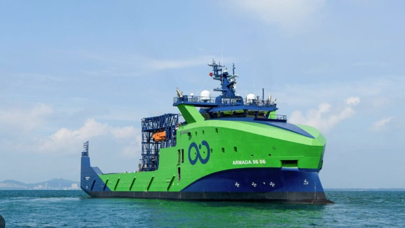
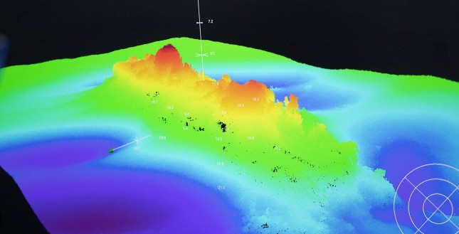

GIS & cartography
Spatial analysis, geographic databases and map production, from planning maps to nautical charts.
57.71° N · 11.97° E — Gothenburg, Sweden
GIS Engineer & Geomatics Specialist
I build maps, spatial analyses and Web GIS applications that turn location data into clear decisions, with a background in hydrographic survey and nautical charting.

About
I am a Geomatics Engineer with a Master's degree in Geomatics from Lund University. I have worked with GIS since 2005: as a GIS technician at the University of Rwanda, in land administration and mineral resource mapping in Rwanda, supporting urban development in Gothenburg, and producing nautical charts at the Swedish Maritime Administration.
My GIS work covers the whole chain: collecting and cleaning data, managing spatial databases, running analysis in ArcGIS Pro, QGIS and Python, and presenting results as clear maps and interactive web applications. I use Python with rasterio, NumPy and SciPy for raster and terrain analysis, and Leaflet and JavaScript to build Web GIS tools with routing, heatmaps, filtering and proximity analysis.
Most recently I processed multibeam and backscatter data at Ocean Infinity in Gothenburg, until the company closed its Swedish office in 2026. I also run CB Web & GIS, where I design and build Web GIS demos and map applications. I am now looking for GIS roles where I can combine analysis, data management and web mapping.
Experience
Feb 2025 – Oct 2026
Ocean Infinity AB · Gothenburg
Mar 2021 – Mar 2025
Swedish Maritime Administration
Apr – Oct 2017
Älvstranden Utveckling AB · Gothenburg
Jan 2009 – Jun 2013
Rwanda Mines, Petroleum and Gas Board · Kigali
2007 – 2009
Nyarugenge and Kamonyi districts · Rwanda
2005 – 2006
GIS Centre, University of Rwanda
Expertise
Spatial analysis, geographic databases and map production, from planning maps to nautical charts.
Interactive map applications with layers, filters, search, routing, heatmaps and drawing tools.
Raster and terrain analysis, automation and data APIs that make geospatial workflows repeatable.
Multibeam bathymetry, side-scan sonar and backscatter, from raw soundings to cleaned surfaces.
Projects
Featured · Terrain analysis
A Web GIS for municipal planning in central Linköping. I processed Lantmäteriet's national elevation model in Python to derive terrain elevation, slope, surface depressions and low points, then modelled illustrative water-level scenarios for the Stångån river. The results are served as interactive layers with a GIS screening of each area.
Open live demo ↗A web tool for land pre-studies ahead of industrial site development in Sweden.
platsvy.se Web GISBusiness locations with category filters, map layers, search, drawing tools and proximity analysis.
Leaflet · Leaflet.draw GIS · Delivery analysisDelivery zones, demand heatmaps, order grouping and road-network routing for local restaurants.
Leaflet.heat · OSRM GIS · Route planningCustomer bookings assigned to mobile mechanics, with optimised driving routes and live tracking.
Leaflet · OSRM GIS · Resource planningAllocates teams and machines to project sites using real road distances.
Leaflet · OSRMMore web and GIS demos, including websites built for local businesses, are on cbwebgis.se ↗
Work




Places connected to my education and career, from Kigali to the Swedish west coast.
Contact
I am available for GIS roles in Sweden. Get in touch about GIS analysis, Web GIS or geospatial data projects.